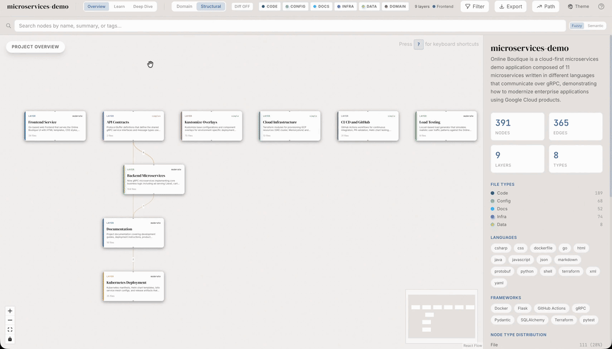

Mapa da trilha
Como o dashboard se parece
Antes da teoria, veja o produto em movimento. Abaixo está o grafo estrutural gerado pelo /understand --full: cada nó é um arquivo do repositório, cada aresta um import ou chamada. Você navega pan/zoom, clica num nó e a sidebar mostra o conteúdo.

Conteúdo detalhado
🧭 O que é Understand Anything e qual problema resolve
Por que ler código no escuro é caro, o que devs fazem hoje, e o que muda quando o repositório vira um grafo interativo.
O cenário base do Understand Anything — entrar num repositório grande e gastar dias só para entender pastas, módulos e quem chama o quê.
Sem nomear o problema, ninguém adota a ferramenta. Esse tópico ancora a dor antes de mostrar a solução.
Tempo de onboarding, custo de troca de time, leitura passiva de código, fadiga de README.
Mapeamento honesto das estratégias tradicionais de onboarding: ler docs, abrir o IDE no caos, perguntar no Slack, fazer pair com sênior.
Identificar onde cada técnica falha — docs desatualizadas, sêniores ocupados, grep sem contexto — justifica a necessidade de um grafo.
Tribal knowledge, bus factor, doc rot, navegação por símbolo, leitura linear vs estrutural.
Um plugin open-source para Claude Code, Cursor, Copilot, Codex e outros agentes que combina análise estática (tree-sitter) com sumarização por LLM para produzir um dashboard interativo.
Entender que não é "mais um chatbot": é um pipeline que gera artefato visual persistente sobre o repositório.
Plugin, slash command, pipeline multi-agente, análise estática, sumarização determinística.
Mapa das pessoas dentro de uma equipe que tipicamente perdem tempo navegando código: júnior em onboarding, PM tentando estimar, reviewer perdido em PR grande, arquiteto fazendo auditoria, suporte caçando bug.
Identificar sua persona acelera a adoção — cada uma usa o dashboard de um jeito.
Persona-adaptive UI, onboarding visual, PR review, auditoria arquitetural, root-cause analysis.
Comparação direta: ler arquivo a arquivo vs. ver o grafo, perguntar no Slack vs. /understand-chat, fazer code review cego vs. /understand-diff.
Mudança de comportamento exige ver o ganho. Esse tópico mostra antes/depois.
Leitura estrutural, navegação visual, contexto persistente, tour guiado, impacto de diff.
Auto-discovery: o plugin instala uma vez e os agentes (Claude Code, Cursor, Copilot, Codex, Gemini CLI, OpenCode, Vibe CLI) detectam os slash commands automaticamente.
Saber que o investimento de uso é portável entre clientes — não é vendor lock-in.
Plugin manifest, auto-discovery, fallback manual, multi-cliente, model: inherit.
🕸️ O conceito de knowledge graph e o dashboard interativo
O que o Understand Anything realmente entrega: um grafo persistente em .understand-anything/ e uma UI 75% grafo + 25% sidebar.
Um nó representa uma unidade do código — pode ser um arquivo, uma função, uma classe ou um conceito de domínio.
Sem entender o que é nó, o usuário não interpreta o grafo: confunde "muitos nós" com "muito código".
Tipo de nó, layer (API/Service/Data/UI/Util), summary, símbolos, path.
Uma aresta liga dois nós — pode significar "importa", "chama", "estende", "depende de", "compõe".
A força do grafo está nas arestas. Sem elas você só tem uma lista de arquivos.
Tipo de aresta, direção, peso, dependência cíclica, fan-in/fan-out.
O grafo vive como JSON em .understand-anything/knowledge-graph.json dentro do repositório. Pode ser versionado, compartilhado, regenerado.
Saber onde está o artefato permite versionar, automatizar e debugar quando algo dá errado.
Schema validation, intermediate files, gitignore, regeneração incremental.
A tela é dividida em grafo (75%) à esquerda e sidebar de 360px à direita. Não tem chat panel nem editor Monaco — o foco é o grafo.
Conhecer o layout evita a frustração de procurar features no lugar errado.
React Flow, Zustand, TailwindCSS v4, dark luxury theme, DM Serif Display.
Aba Info mostra ProjectOverview (default), NodeInfo (ao selecionar nó) ou LearnPanel (persona Learn). Aba Files mostra árvore derivada do grafo.
A sidebar é onde 80% da informação textual vive. Saber o que aparece quando muda a UX.
ProjectOverview, NodeInfo, LearnPanel, FileExplorer, persona switching.
Clicar em um arquivo abre um viewer que sobe pela base da tela; um botão expande para modal full-screen. Conteúdo vem de /file-content.json via dev server, gated por token + allowlist.
Ver código no contexto do grafo (sem trocar de ferramenta) é o que diferencia o dashboard de uma planilha.
prism-react-renderer, access token, path allowlist, slide-up viewer, fullscreen modal.
A navegação combina ações visuais (pan, zoom, click) com tours auto-gerados que ordenam nós por dependência — você "lê" o codebase na ordem certa.
Sem o tour, devs novos clicam aleatoriamente. Com tour, há um caminho.
Tour builder, ordenação topológica, fuzzy search, semantic search, layer view.
⚙️ Fluxo de uso: do /understand ao dashboard e casos reais
Passo a passo de /understand --full, os cinco comandos auxiliares e três casos práticos do dia a dia.
O comando principal: dispara o pipeline (project-scanner, file-analyzer, architecture-analyzer, tour-builder, graph-reviewer), monta o grafo e auto-aciona /understand-dashboard.
Esse é o ponto de entrada. Sem rodar essa linha, nada existe.
Auto-trigger, intermediate files, cleanup, model omitido para portabilidade.
Sobe o dashboard React lendo .understand-anything/knowledge-graph.json + endpoint /file-content.json.
Saber abrir e fechar o dashboard sem depender do auto-trigger te dá controle.
Dev server, schema validation, error banner, token + allowlist.
Modo conversa que usa o grafo como contexto — responde "onde está o auth?" com nós e caminhos reais.
É a porta de entrada para quem prefere texto a clicar no grafo.
Grounded answers, citação de nós, retrieval pelo grafo.
Compara HEAD com uma branch/commit e mostra quais nós/arestas mudam de comportamento. Útil em PR review.
Você vê o "raio de impacto" sem ler todo o diff manualmente.
Ripple effect, fan-in afetado, regression risk, review priorizado.
Recebe um arquivo/função e devolve explicação plain-English contextualizada por nós vizinhos do grafo.
É diferente de "ChatGPT olha o arquivo" — aqui a explicação cita quem chama e quem é chamado.
Contexto estrutural, vizinhança, leitura em camadas.
Gera um roteiro passo a passo de quais nós ler primeiro, baseado em dependência e centralidade.
Substitui o "comece lendo o README" por uma sequência concreta de arquivos com explicação.
Centrality, dependency order, persona-adaptive, checklist de leitura.
Três histórias concretas: dev novo no time, reviewer com PR de 40 arquivos, suporte caçando bug de produção.
Ver o ROI em situações reais consolida a adoção.
Time-to-first-PR, review velocity, MTTR, decisão baseada em grafo.